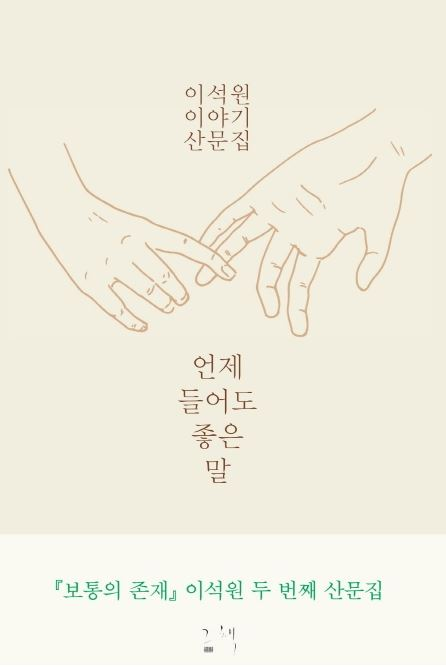
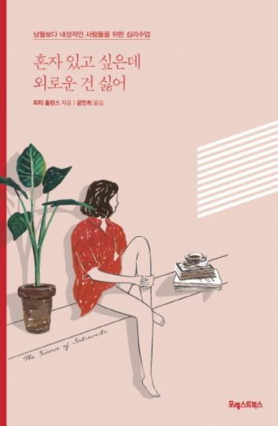

About Essay
언제 들어도 좋은 말

지은이: 이석원 | 페이지 356
이 책은 42세 이혼남 이석원이 찻집에서 새로운 여자를 만나고, 순간의 감정을 솔직하게 담은 내용이다. 이석원과 여자의 관계 속에서 많은 것을 느끼고, 나를 돌아 볼 수 있다.
"너는 너라서 그런 표정을 짓고 그런 말을 하지, 나는 나라서 이런 행동을 하고 이런 생각을 해. 우리는 그렇게 다른 사람들인데 왜 네 기준을 함부로 남에게 적용하는 거니" 이 말이 인상 깊었다. 살아가면서 나는 다른 사람들을 나만의 기준으로 평가하고 판단했던 것 같다. 사람마다 생각의 차이가 있지만, 이를 인지하지 못하고 이기적으로 살아온 것 같다는 생각이 들었다. 내 기준으로 남을 함부로 판단하기 전에 그 사람의 배경, 감정, 생각을 이해하며 그 사람의 입장, 그 사람의 기준부터 알아가도록 노력해야겠다.
또한, "자신을 불편하게 만드는 이에게 아닌 걸 아니라고 말하지 못하는 사람은 불편해진 관계의 엄연한 공범이라고"라는 문장이 와닿았다. 나는 항상 상대방과 갈등이 있을 때, 불만을 제대로 표현하지 않는 성격이다. 불만이 있을 때, 말하지 않는 것이 내가 잘 참는 것이고 상대방을 이해해준다고 생각했기 때문이다. 하지만 이런 회피적인 자세는 오히려 관계에 더 악영향을 미치리라는 것을 알았다. 불만을 말하지 않으면, 비언어적으로 당연히 드러날 것이고 그러면 그 관계는 더욱 나빠질 것이기 때문이다. 이러한 악순환을 끊기 위해서는 내가 내 입장을 솔직하게 말하는 자세를 지니는 것이 중요하다고 느꼈다.
사람 간의 관계가 어려운 사람에게 이 책을 추천해주고 싶다. 한 사람의 이야기를 통해 많은 것을 배우고 생각하게 되는 책인 것 같다.
혼자 있고 싶은데 외로운 건 싫어

지은이: 피터 홀린스 | 페이지 192
이 책은 내성적인 사람들과 외향적인 사람들의 특징과 어떤 활동을 통해 에너지를 얻는지, 사람의 성향이 변할 수 있는지 등 사람의 외향과 내향성에 대해 다룬 책이다.
"사람들은 상황에 따라 내향성을 띠기도 하고, 외향성을 띠기도 한다. 그러한 내향성과 외향성의 균형 감각이 있어야 한다는 것이다"라는 말이 가장 인상 깊었다. 나는 내 성향을 하나로 단정 짓기 어렵다고 느껴졌다. 사람은 언제나 내향적일 수도 있고, 외향적일 수도 있다. 내 성향에 연연하지 말고, 자신 있게 행동하고 상황에 따라 적절한 성향을 띄는 것이 중요하다고 느껴졌다. 책을 읽으면서 아쉬웠던 점은 책에서 성향의 우위가 없다고 했지만, 은근히 외향적인 성향을 우위에 뒀다고 느껴졌다. 외향적인 사람이 내향적인 사람보다 행복하고, 마지막 단락에 내향적인 사람이 좀 더 외향적인 특징을 가지라는 내용이 담겨 있어서 아쉬웠다.
요즘 유행하는 MBTI와 심리테스트처럼 사람의 성격에 관심 있는 사람들에게 추천하고 싶다. 외향성과 내향성의 특징을 살펴보며, 나는 어느 쪽에 가까운지 생각해 보는 재미가 있다.